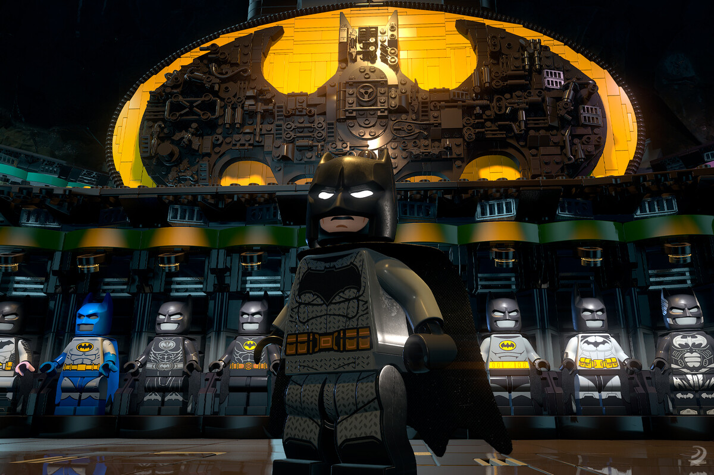
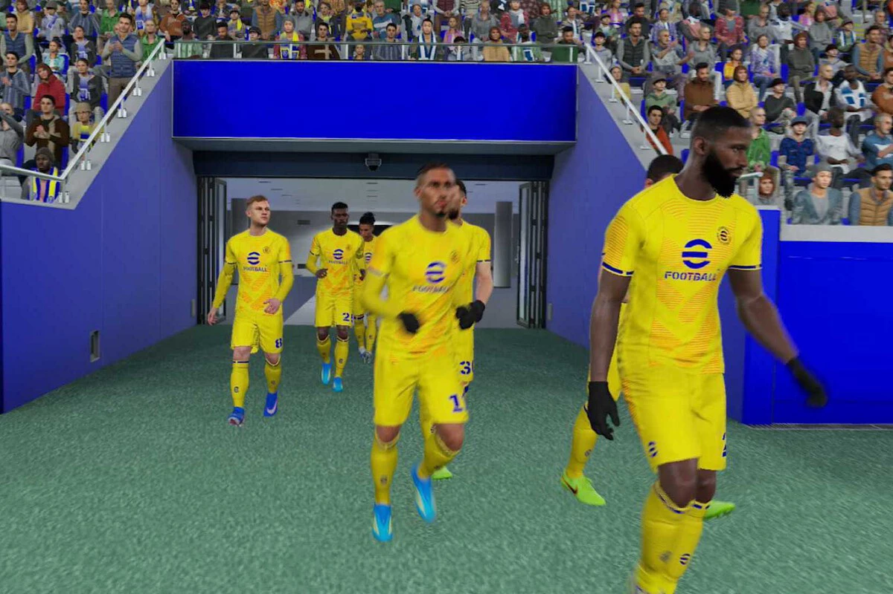
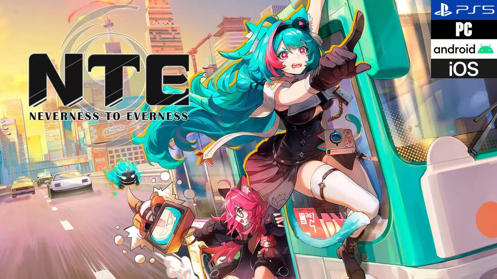
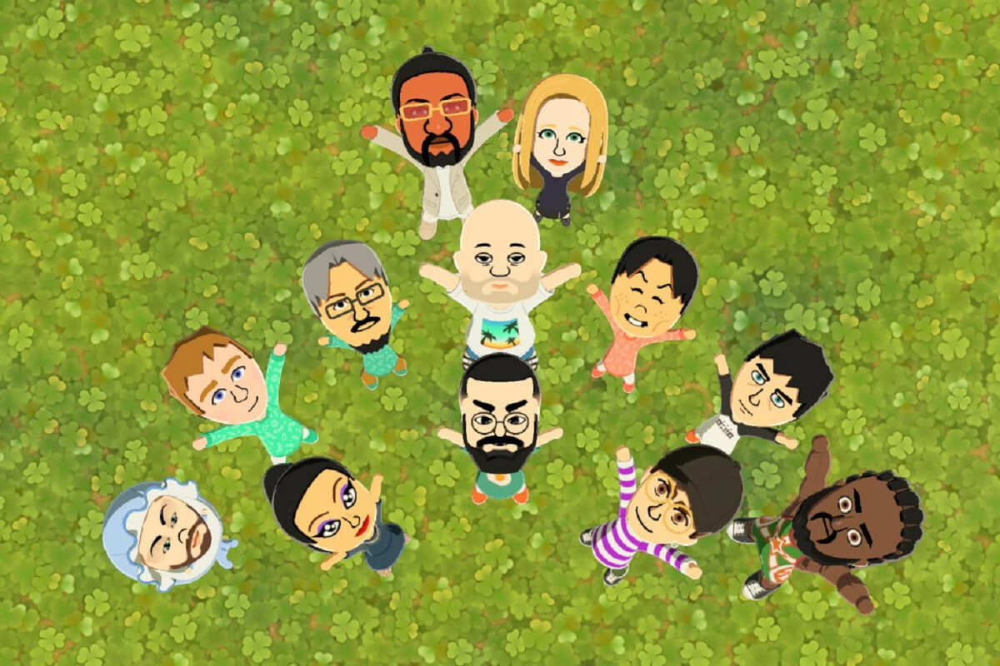
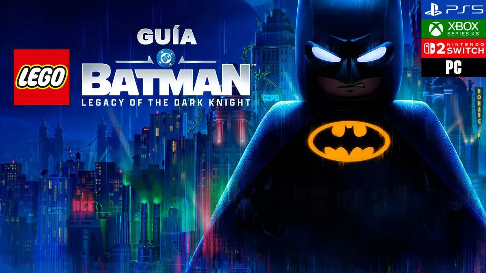
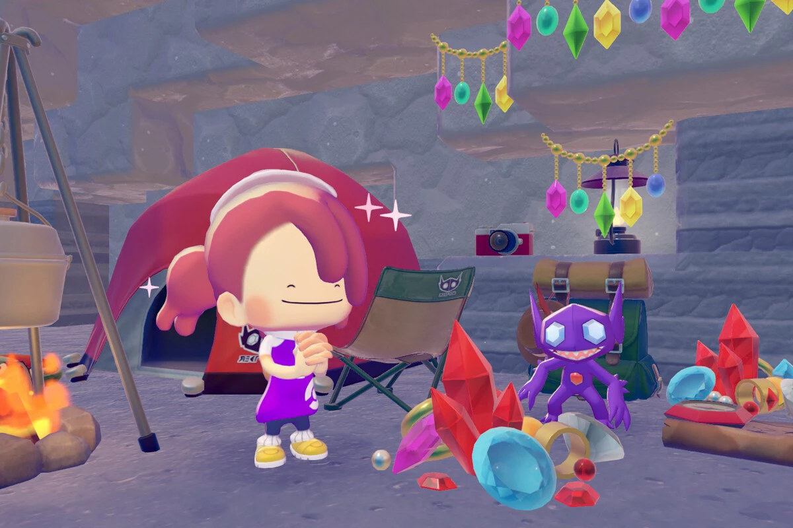
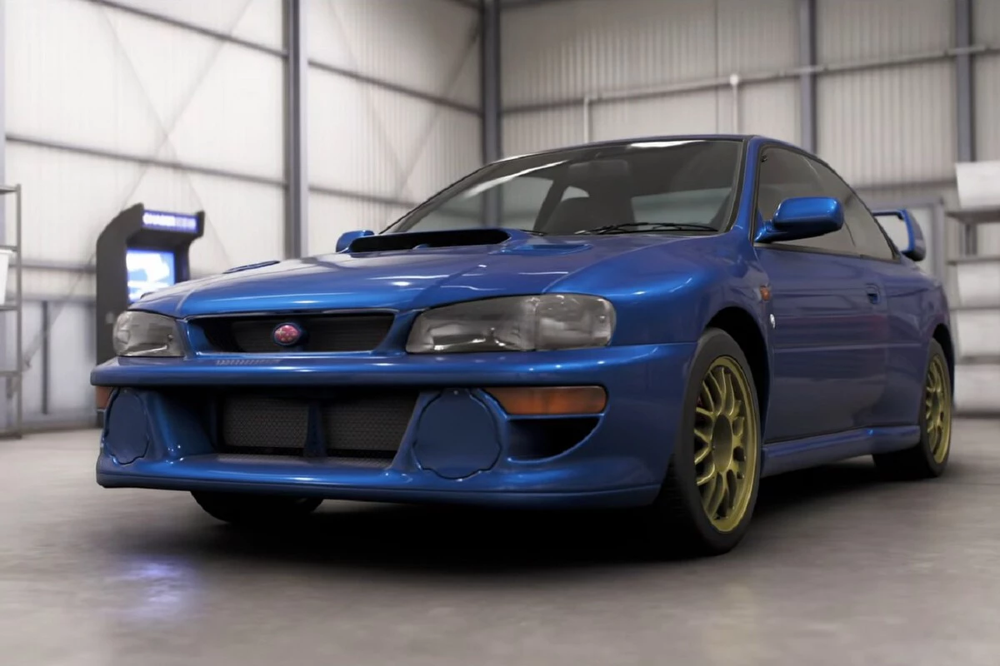

El mejor juego de Batman desde los Arkham. Análisis de El Legado del Caballero Oscuro
Casi 13 años después, la saga PES llega a una consola de Nintendo con eFootball Kick-Off! y lo hace de una forma arriesgada
Análisis Neverness to Everness, más que un simple 'gacha' inspirado en GTA (PS5, PC, Android, iPhone)
Un videojuego puede ser bueno y no para todo el mundo. Tomodachi Life: Una vida de ensueño lo demuestra
Guía LEGO Batman: Legacy of the Dark Knight, trucos, consejos y secretos
Este trucazo de Pokémon Pokopia le quita toda la gracia a su último evento, pero es el método más infalible para conseguir todo rápido
Guía Forza Horizon 6: truco para farmear puntos de habilidad y Super Ruletas infinitas